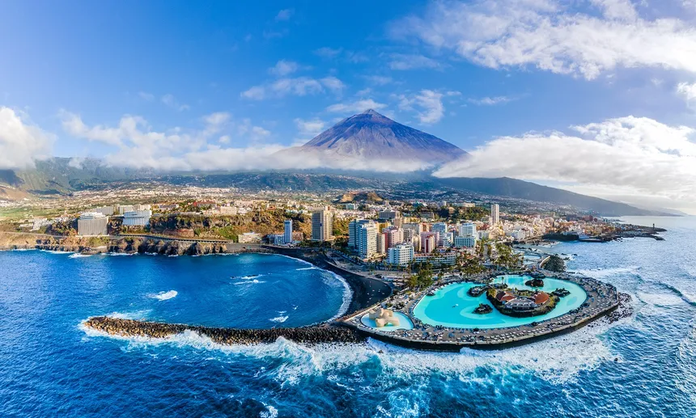
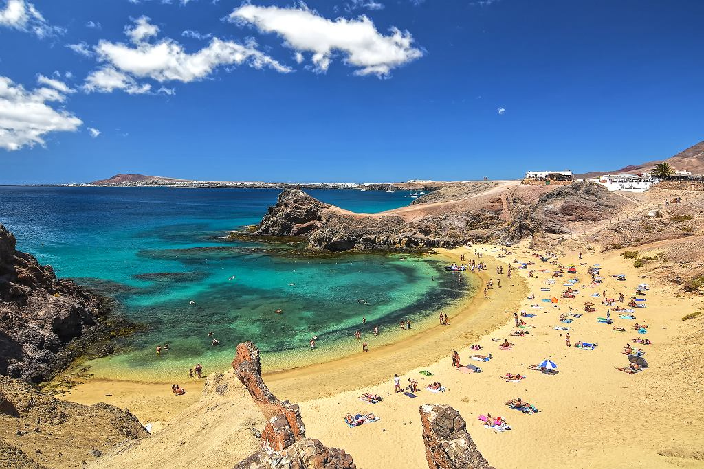

Wyspy Lanzarote
Wyspy Kanaryjskie to archipelag wysp położonych na północny zachód
od wybrzeży Afryki.
- Liczba ludności: 1,99 mln
- Powierzchnia: 7442 km2
- Oficjalny język: hiszpański
Wyspy wchodzące w skład archipelagu:
- Lanzarote
- Fuerteventura
- Gran Canaria
- Teneryfa
- El Hierro
- La Palma
- La Gomera


Obraz wyspy Lanzarote
Gottfried Wilhelm Leibniz
Gottfried Wilhelm Leibniz